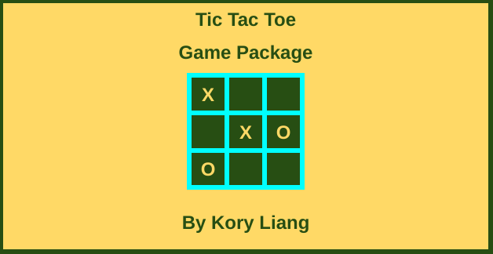

Tic Tac Toe seems like an easy game that is straight forward,
but it really is not that simple given we must practice a lot of skills where we plan ahead.
It is a game where we practice making predictions based on probability.
Furthermore,
we predict the probability that the action from the person we are playing against may take place.
The game is set up with a 3x3 square grid and players X and O traditionally.
When we play, we are player X and our opponent is player O.
Our opponent could be another player such as a friend if playing manually.
Otherwise the computer can be our opponent if the game is automated.
The game result for us can be either a win, loss,
or a tie depending on how the game is played.
Winning a game in Tic Tac Toe requires 3 of a player’s marks in a row in any direction;
up, down, across, or diagonally.
The game is completely over when all 9 squares are occupied.
If neither player (X or O) occupies 3 squares in a row, the game results in a tie.
Being strategic at Tic Tac Toe focuses on how to get 3 marks in a row as well as
trying to prevent our component from getting 3 marks in a row whether another player or the computer.
After we place a mark (X) in a square,
we should observe where our opponent (O) will choose and plan ahead based on that.
It is possible our opponent can place 2 marks in a row and increase a chance of a loss for us.
We may have to choose a specific square sometimes
to keep the game going from a loss given our opponent has 2 marks in a row.
Overall, this game focuses on skills where we pay attention and plan ahead
based on conditions we act on and what our opponents give us.
Note: This page is subject to changes on a need-to-update basis.